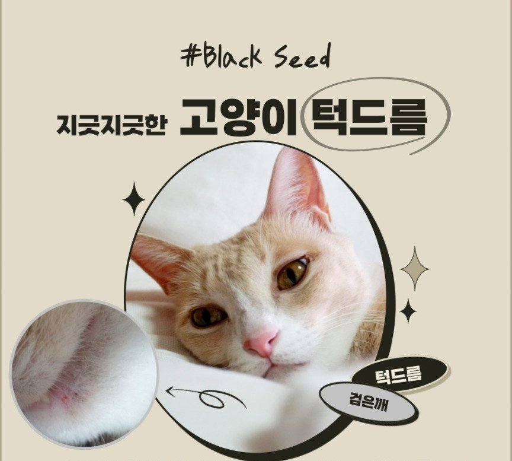
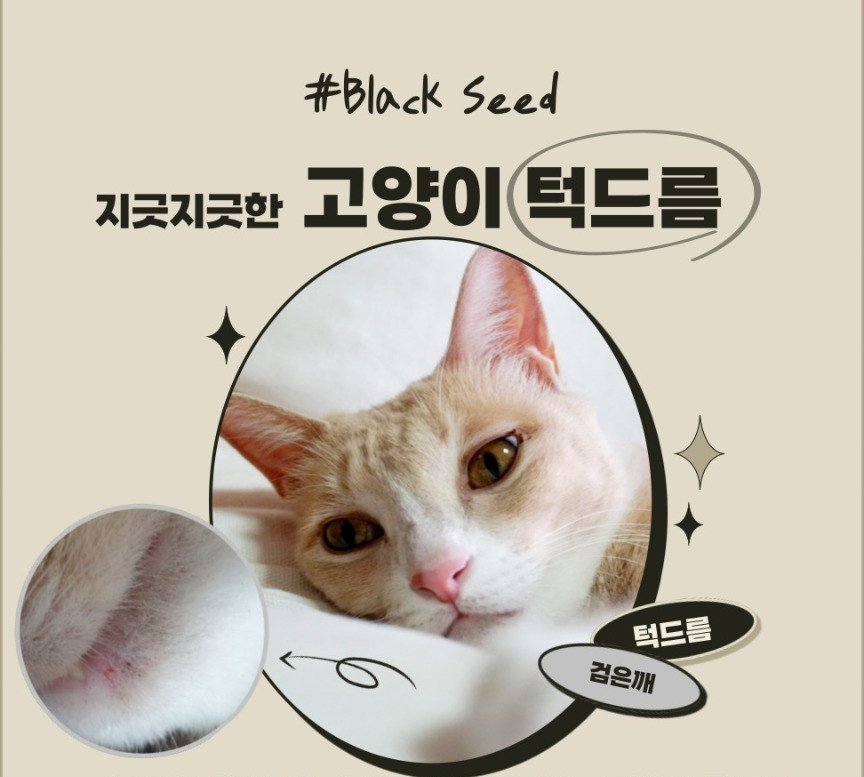
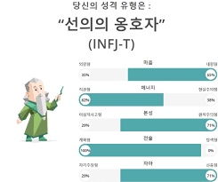
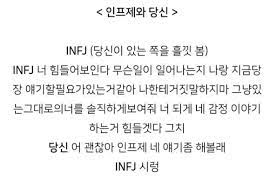
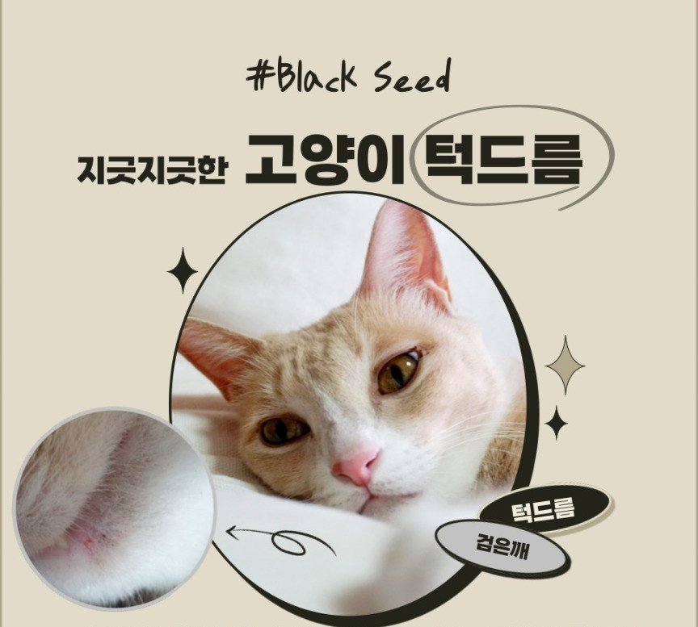

요즘 제가 환장하는 것 두 가지가 있는데요...
 

 
이상주의적, 완벽주의적 성향을 추구한다고 합니다.
호기심이 많고 열정적이며 언제가 의문을 갖는다고 합니다.

필요한 경우엔 아래의 연락처를 이용하시면 되겠습니다.
| 김현식의 연락처 | |
|---|---|
| 전화번호 | 010-2922-3016 |
| 이메일 | shj05230@naver.com |
| shj05230@gmail.com | |
| shj05230@yonsei.ac.kr | |